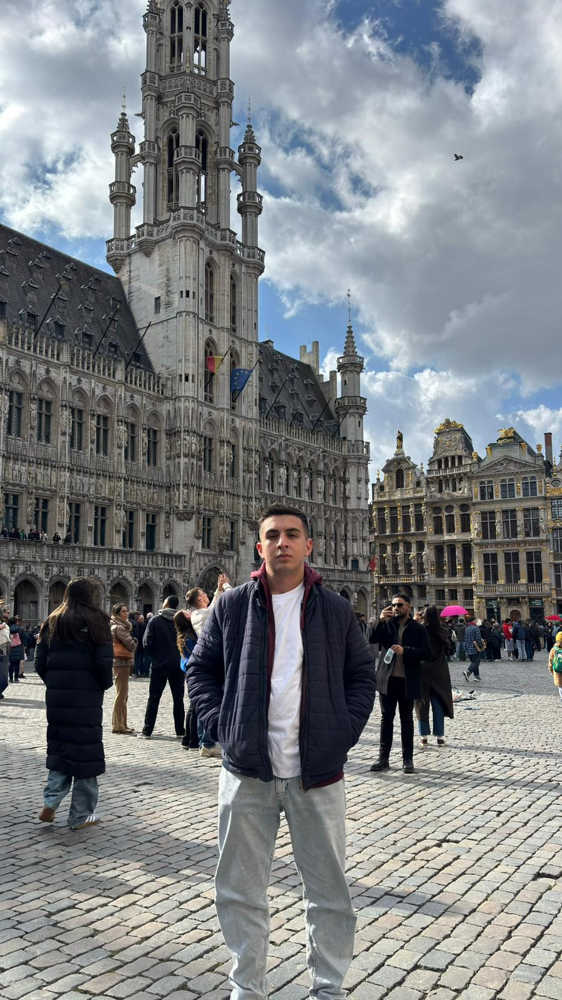
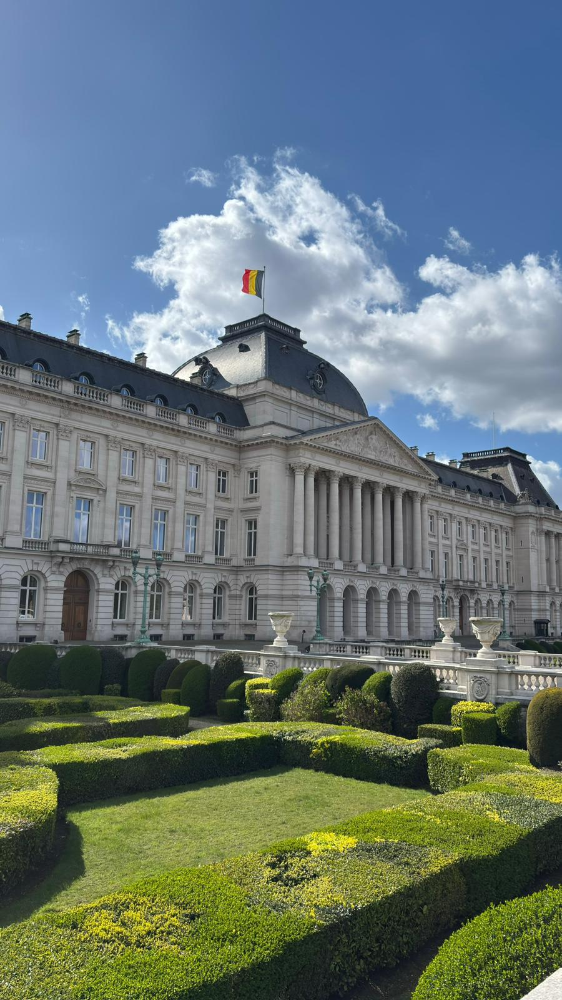
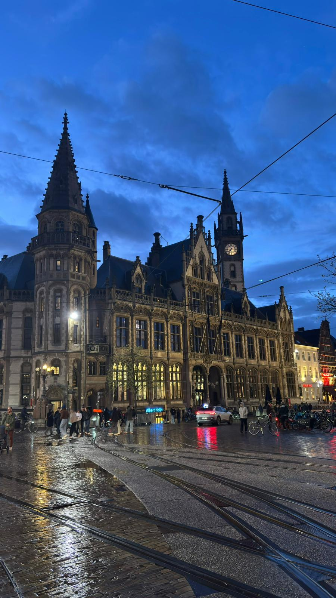
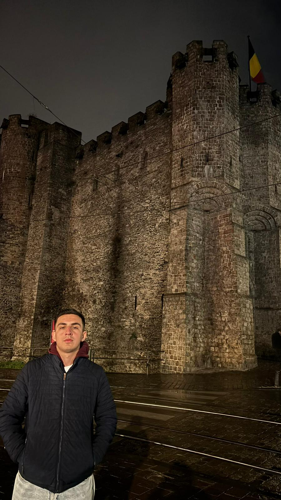

Belgium
Belgium was another country I visited during my Erasmus journey, and I had the chance to explore both Brussels and Ghent. Brussels felt like a modern and spacious city. One of the highlights of my visit was seeing the European Union buildings, which was especially interesting as a student. I also visited the Town Hall and the famous Grand Place. Grand Place was truly breathtaking, with beautiful historic buildings surrounding the square from every direction. It was easily one of the most impressive places I saw in Brussels. Ghent, on the other hand, had a completely different atmosphere. The city was full of historic buildings, and I found myself surrounded by medieval architecture almost everywhere I went. Walking through its streets felt very different from walking through Brussels. Although I enjoyed both cities, I personally preferred Ghent. Its historic charm and unique atmosphere made it one of the most memorable places I visited in Belgium.
Photo Gallery




Cities Visited
- Brussels
- Ghent
Favorite Place
Grand Place
My Rating
9/10 ⭐